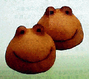

大王様に会うには、上の絵をクリック。ずずっと奥に写真館があるぞ。 |
|
【かえる古新聞】
|
|
【カエル速報】 1.カエルグッズ 2.カエルリンク 3.国家健全化計画 4.謎の髭男 5.とっくりくん 6.街頭で見た蛙 7.カエルグッズ店 |
| 大王様へのメール |
奉賛会推薦菓子
かえる饅頭 |
「私は食べた」意外に美味、とＮ同志
|
 |
Ｎ同志は、包装紙や、栞なども保存していたし、なにより饅頭を作っている青柳総本家を訪問していた。それによると、饅頭は、九州銘菓ひよこ、に似た素材で、形はカエルの顔そのもの。味はコケモモ風味という。
「青柳総本家には１６００個くらいのカエルものが陳列してある」ともいう。カエルグッズ収集家にとっては、一生に一度は詣でてみなければならぬではないか。
栞には、青柳のカエルまんじゅう−−の歌？が書かれている。
ふんわか可愛いカエルのお菓子。中身はさわやかコケモモ風味。楽しいカエルの語呂合わせ。。。（以下略）
かえるファンなら、一度は、このカエル饅頭を食べてみよう！！でもカエルを食べるなんて俺にはできんぞーって気もするがな。
前号で紹介のカエルリュック進呈
【全国かえる奉賛会発表】全国かえる奉賛会は、２月２５日号で紹介したカエルショップで販売していたカエルリュックを、ぜひとも親子で着用したい、と北海道在住の方が熱望のメールを受けました。奉賛会は、このカエル主義的親子の人生を全力をあげて支援するため、カエルリュックを進呈することにしました。「届きましたら、子ども達にしょわせて撮影します。楽しみにまってまーす！！」ということなので報告を待つべし親子に励ましのメールを出そう
| 写真の説明＝カエル娘：Ｎ同志が大切に保存していた、カエル饅頭の包装紙、しおりなどから、カエル饅頭の全貌が明らかとなった。 |